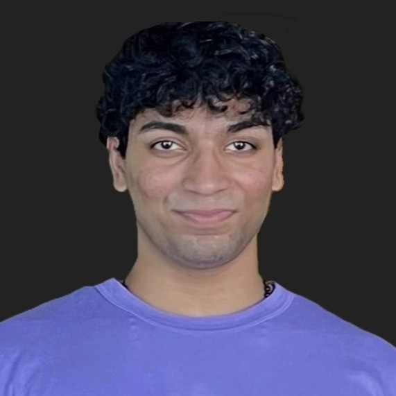

|
REUBEN MATHEW
Hello! I'm a Master's student in Mechanical Engineering at the University of Washington, specializing in Controls, Mechatronics, and Robotics, with a current GPA of 3.86/4, and relevant coursework in Linear Systems Theory, Dynamics and Vibrations, NonLinear Control, Multivariable Control and Robust Control.
Prior to this, I earned my Bachelor of Technology in Mechanical Engineering from Delhi Technological University, graduating with a GPA of 3.80/4.
Currently, I am working with Boeing Advanced Research Collaboration to build an automated inspection cell cleaning bot as part of my project based MS option.
Email /
CV /
LinkedIn /
GitHub
|

|
Interests
My primary interests lie in the intersection of Robotics and Automation, Control Systems, and Mechatronics. I am particularly passionate about designing intelligent systems that bridge the gap between theoretical control frameworks and real-world robotic applications.
Additionally, I have a strong interest in leveraging modern optimization techniques to enhance the design and manufacturing process. This includes applying tools like CAD and FEA to create innovative, cost-effective solutions. I am especially driven by advancing human-robot interaction through intelligent control frameworks that enable robots to better understand and interact with their environments.
Outside of engineering, I enjoy weight lifting to stay active and practicing guitar as a creative outlet. I find that both help me stay focused, energized, and balanced in my academic and project work.
Experience
-
Mercedes-Benz Research and Development North America:
Powertrain Engineering Intern (Start: June, 2025)
-
Boeing Advanced Research Collaboration at University of Washington:
Mechatronics Masters Project Engineer
- Designing and prototyping an automated robotic system for ultrasonic inspection cell maintenance.
- Expected to increase operational uptime by 100+ hours annually and reduce maintenance costs.
-
Altair (Robotics Technical Team of Delhi Technological University):
Team Advisor
- Led and developed multiple robotics projects, including Micromouse, Line Following Robot, and Robosoccer.
- Integrated sensors, actuators, motor drivers, and control systems, achieving top rankings in robotics competitions.
- Worked on CanSat and Intelligent Ground Vehicle competition (IGVC), specializing in mechanical and electrical design.
- Led teams of 7+ students in competitive robotics, optimizing designs through iterative improvements and structural analysis.
-
Delhi Metro Rail Corporation:
Mechanical Engineering Trainee
- Acquired hands-on experience in Bogie, HVAC, Door Systems, and Pneumatics.
- Analyzed technical schematics and performed troubleshooting, assembly, and maintenance of rolling stock systems.
-
Suzuki Motor Corp. Service Center:
Mechanical Engineering Trainee
- Diagnosed and repaired over 150 vehicles, optimizing service workflows to reduce service time by 5%.
- Gained hands-on experience with every automobile component, maintenance procedures and vehicle systems and diagnostics.
|
Technical Skills
|
- Computer Aided Design (CAD): SOLIDWORKS, CATIA, CREO, AutoCAD, Fusion 360, Revit
- Finite Element Analysis (FEA): Ansys (Fluent, Mechanical, Workbench), Abaqus
- Programming Languages: Python (Matplotlib, Numpy, Pandas, Scipy), MATLAB
- Quality Tools: FMEA, Root Cause Analysis, Six Sigma
- Others: ROS, PLC, Arduino IDE, Raspberry Pi, Simulink, PCB Design, GD&T, MS Office
|
Projects
(Images are expandable)
|
PID vs MPC Controller High Speed Cornering Analysis(May, 2025)
Simulated and benchmarked PID and MPC control strategies for high-speed vehicle cornering in the CARLA simulator. Tuned for high speed and moderate stability.
Analysis included:
• Cross-track error (CTE), heading error, and lateral deviation tracking
• Steering, throttle/brake effort, and lane stability evaluation
• Speed profile and total time analysis across multiple speeds (115–160 km/h)
Learn More »
ROS-Based Robotic Arm Simulation (December, 2024)
Developed a robotic arm simulation system using ROS framework, integrating:
• SOLIDWORKS-to-URDF conversion for 3D model compatibility
• MoveIt! for advanced motion planning and control
• RViz visualization and Gazebo physics simulation
• Custom Python scripts for automated arm movements
Learn more »
CARLA Autonomous Vehicle Motion Planning (December, 2023)
Simulated an autonomous vehicle motion planning system in CARLA simulator utilizing:
• Behavioral planning logic for dynamic obstacle avoidance and stop sign handling
• Path generation algorithms with spiral trajectory optimization
• Static collision checking and path selection systems
• Custom velocity profile generation for various driving scenarios
Learn more »
|
View Certificate »
Vehicle Detection and Counting using YOLOv8 and OpenCV (May, 2024)
Built a computer vision-based vehicle detection and counting system featuring:
• YOLOv8 and OpenCV for real-time vehicle detection and tracking
• SORT algorithm implementation for accurate vehicle path tracing
• Custom region masking for specific detection zones
• Real-time visualization system with count display and tracking boxes
Learn more »
MATLAB Program to Visualize COVID-19 Data (November, 2023)
Created a MATLAB-based COVID-19 data visualization platform with:
• Object-oriented programming for data processing and analysis
• Interactive GUI with dynamic plotting capabilities and data filtering
• Custom search functionality and data range selection tools
• Real-time statistical analysis with adjustable moving averages
Learn more »
|
View Certificate »
FSAE Chassis ANSYS Structural Simulations (September, 2022)
Designed and analyzed a Formula SAE racing chassis, integrating:
• SOLIDWORKS for complete 3D chassis modeling
• ANSYS Structural simulation for impact and performance testing
• Multiple load case analyses including front impact, side collision, cornering loads, and torque tests
Learn more »
Undergraduate Technical Team Bots
(February, 2022 – April, 2024)
Led robotics projects at DTU Altair technical team, integrating:
• Micromouse robot with Arduino control system, IR sensors, and H-Bridge motor drivers
• Line follower robot featuring PID control and 3D-printed optimized chassis design
• Remote-operated Robosoccer bot with custom sheet metal and 3D-printed components
• Prototype designs for CanSat, Intelligent Ground Vehicle Competition and various other competitions.
Learn more »
|